Bienvenido al mundo de las Matemáticas
En esta página encontrarás conceptos basados en los apuntes de Aplicaciones del Pensamiento Matemático. Aprende teoría, consulta imágenes, realiza conversiones y practica con herramientas interactivas.
¿Qué concepto deseas buscar?
Ángulos
Conceptos, clasificación y propiedades.
¿Qué es un ángulo?
Es la porción del plano comprendida entre dos semirrectas que tienen un origen común denominado vértice. Las semirrectas son los lados del ángulo.
Tipos de ángulos según su medida
| Ángulo | Descripción | Imagen |
|---|---|---|
| Agudo | Mide más de 0° y menos de 90°. | 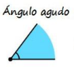 |
| Recto | Mide exactamente 90°. | 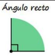 |
| Obtuso | Mide más de 90° y menos de 180°. | 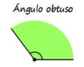 |
| Llano | Mide exactamente 180°. | 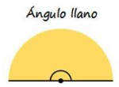 |
| Completo | Mide 360°. | 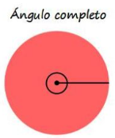 |
| Nulo | Mide 0°. | 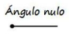 |
| Cóncavo | Mide más de 180° y menos de 360°. | 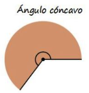 |
Ángulos según su posición
| Ángulo | Descripción | Imagen |
|---|---|---|
| Consecutivos | Comparten vértice y un lado común. | 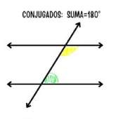 |
| Adyacentes | Son consecutivos y sus lados no comunes forman 180°. | 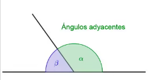 |
| Opuestos por el vértice | Se forman al cruzarse dos rectas y tienen la misma medida. | 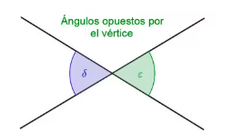 |
Ángulos según su suma
| Ángulo | Descripción | Imagen |
|---|---|---|
| Complementarios | Dos ángulos que suman 90°. | 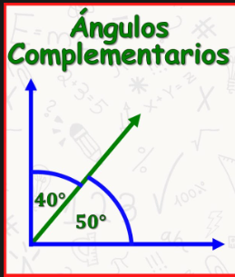 |
| Suplementarios | Dos ángulos que suman 180°. | 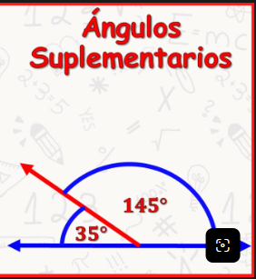 |
Rectas paralelas cortadas por una transversal
Cuando dos rectas paralelas son cortadas por una transversal se forman ocho ángulos.
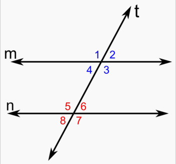
- Correspondientes: ocupan la misma posición y son iguales.
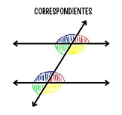
- Alternos internos: están dentro de las paralelas y en lados opuestos.
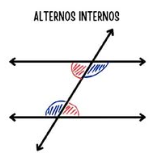
- Alternos externos: están fuera de las paralelas y en lados opuestos.
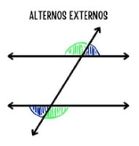
- Colaterales: están del mismo lado de la transversal y suman 180°.
Formas de medir los ángulos
Grados sexagesimales (°)
Una circunferencia completa equivale a 360 grados. Cada grado se divide en 60 minutos y cada minuto en 60 segundos.
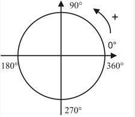
Radianes (rad)
Un radián es el ángulo central cuyo arco tiene la misma longitud que el radio. Una vuelta completa equivale a 2π radianes.
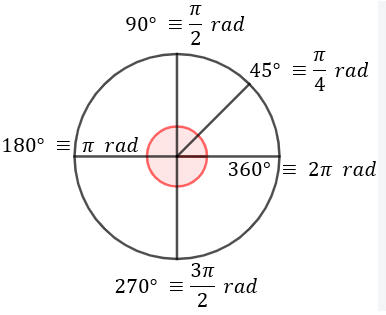
Conversiones de grados y radianes
Calcula y comprueba tus resultados.
Grados, minutos y segundos a grados decimales
GD = G + (M / 60) + (S / 3600)
Grados decimales a radianes
rad = grados × π / 180
Radianes a grados decimales y GMS
Grados = radianes × 180 / π
Triángulos semejantes y congruentes
Compara sus lados y ángulos.
Triángulos semejantes
Dos triángulos son semejantes cuando tienen la misma forma, aunque sus tamaños sean diferentes.
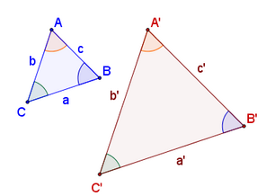
- Ángulo-Ángulo (AA): tienen dos ángulos correspondientes iguales.
- Lado-Lado-Lado (LLL): sus tres pares de lados son proporcionales.
- Lado-Ángulo-Lado (LAL): tienen un ángulo igual y los lados que lo forman son proporcionales.
Triángulos congruentes
Dos triángulos son congruentes cuando tienen exactamente la misma forma y tamaño.
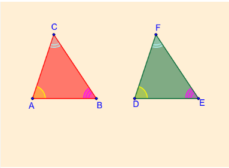
- LLL: sus tres lados correspondientes son iguales.
- LAL: dos lados y el ángulo comprendido son iguales.
- ALA: dos ángulos y el lado comprendido son iguales.
Coordenadas rectangulares y polares
Ubica puntos en diferentes sistemas.
Conceptos principales
- Coordenada: número que indica la posición de un punto.
- Par ordenado: conjunto de dos coordenadas (x,y).
- Abscisa: coordenada horizontal X.
- Ordenada: coordenada vertical Y.
- Polo: origen del plano polar.
- Argumento: ángulo θ medido desde el eje polar.
- Coordenada rectangular: (x,y).
- Coordenada polar: (r,θ).
Plano cartesiano
Está formado por dos ejes perpendiculares, X y Y, que se cortan en el origen (0,0).
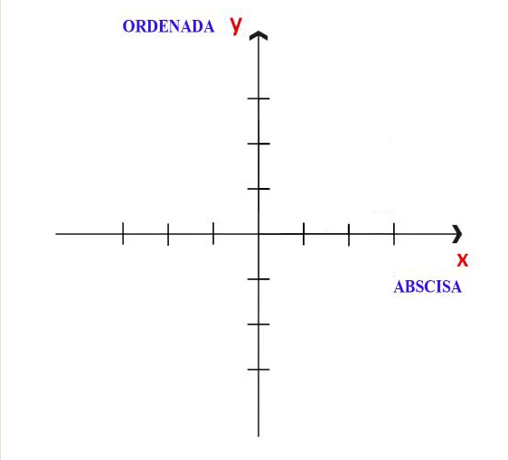
Plano polar
Está formado por un polo y un eje polar. Los puntos se localizan mediante una distancia r y un ángulo θ.
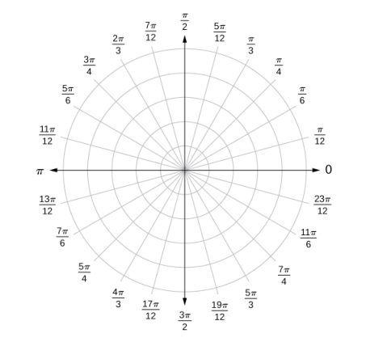
Conversiones de coordenadas
Transforma coordenadas rectangulares y polares.
Rectangulares a polares
r = √(x² + y²)
θ = atan2(y,x)
Polares a rectangulares
x = r cos(θ)
y = r sen(θ)
Plano cartesiano interactivo
Explora, mueve y amplía el plano.
Introduce las coordenadas para representar un punto. También puedes arrastrar el plano y utilizar el zoom.
Punto actual: (2, 3)
Arrastra para mover el plano · Usa la rueda del ratón para acercar o alejar · Pulsa el plano para seleccionar un punto.
Tarjetas de estudio
Repasa los conceptos aprendidos.
Presiona la tarjeta para descubrir la respuesta.
Presiona para revelar
Respuesta
Mini cuestionario matemático
Comprueba cuánto has aprendido.